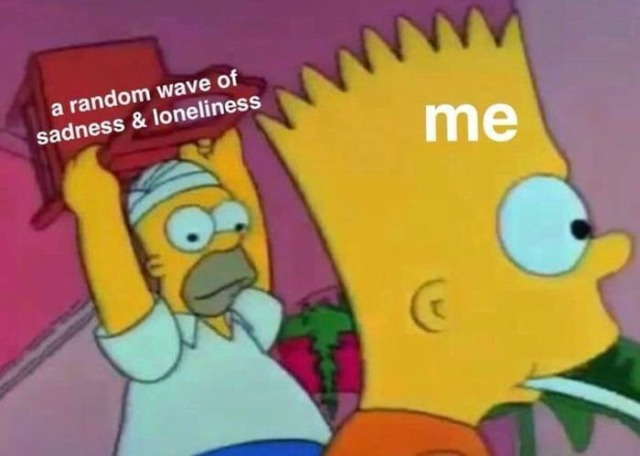

Hidden Beauty
there doesn't seem to be much...
maybe make the screen smaller

Years of neglect have
Covered my garden
Allowing brambles and weeds
To grow wild
The flowers unseen underneath
A cover
of cascading green lushness
Dotted with white and pink
Hidden by thorns
And winding weeds
Patient beauty is waiting
Yet uncaring laziness is
Suffocating tender blooms
Denying them light
Seduced by fruit
So sweet and tasty
Of a thorny vine
Lulled into complacency
Unaware of silent unfoldment
In darkness
Step by step
We uncover the secret
Cutting away thorns
Clearing out the
Dead and the dying
Shedding light
Into places of decay
Discovering flowers
We never knew where there
Glory in color
No longer hidden
Is finally able
To shine
- Jasmine Martin
i am unattractive, and i know this.
it's because i can't make myself smile.
it doesn't feel right.
i am unattractive, and i know this.
it's because i can't laugh like i used to.
what is there to laugh at?
- baselessfears
Many of us don't see beauty
in ourselves.
We have to work to find
the smallest idea of what
we like in us.
Even to those who seem
to be apparent in beauty,
they may find it hard to see.
Maybe we can help eachother see better...